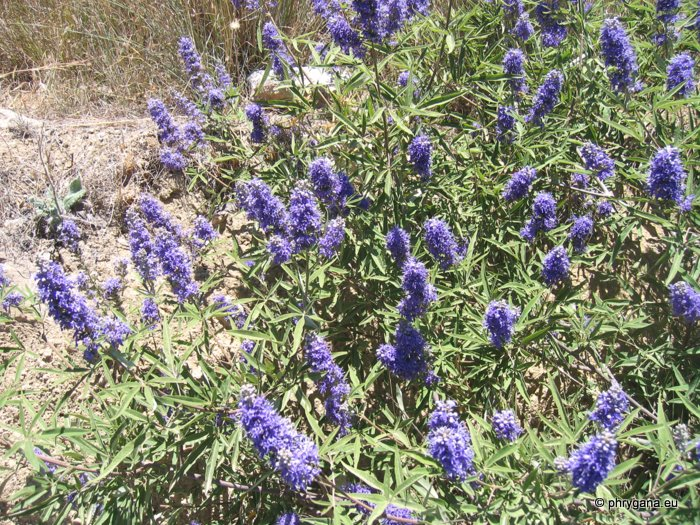
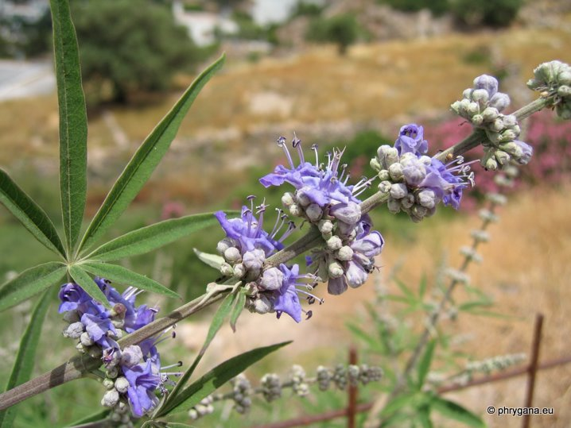
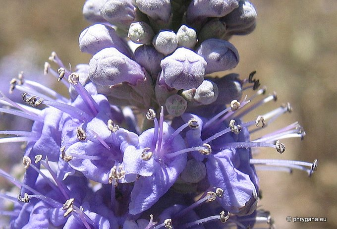
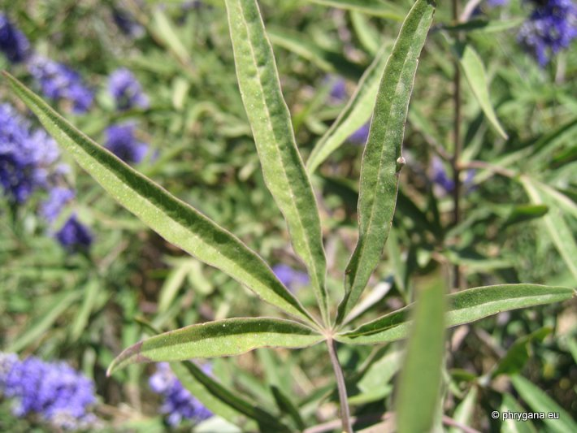
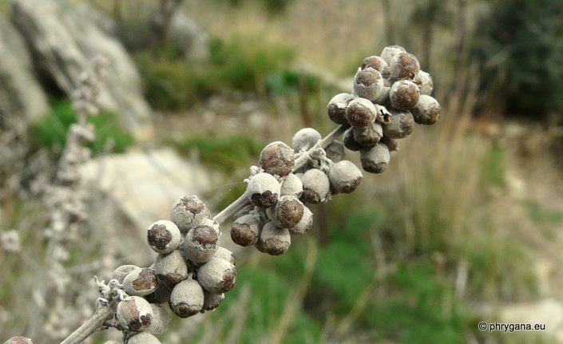
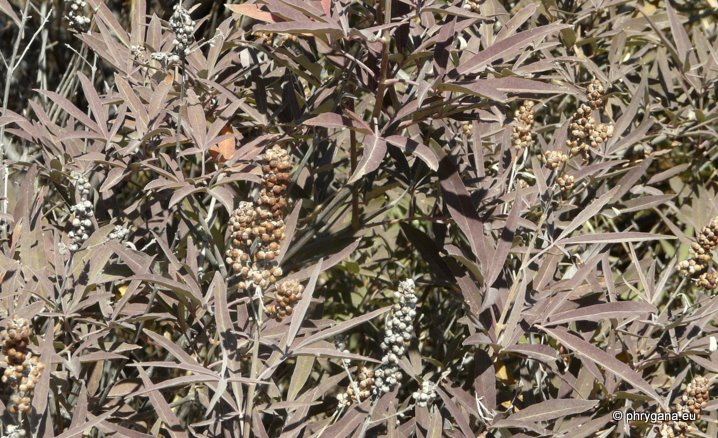

| PHRYGANA | Fauna | Flora | Galles | liste des espèces |
contact -
info - commentaires phrygana1 (at) gmail.com |
| Particularités crétoises | nouveautés | Mines | ressources naturelles |
| Vitex agnus-castus L. |
| 62 | Flora | LAMIACEAE | Vitex L. |
|
 Vitex agnus-castus Orne 07 juillet 2007 |
| (en) Chaste tree -- (fr) le Gattilier | |
| Feuille: composée-digitée, longuement pédonculée à folioles (4 - 7) entières, allongées pointues, à face supérieure glabre, et à face inférieure feutrée grisâtre, longues de 20 à 100 mm. | |
| Tiges: les
jeunes tiges ont une section quadrangulaire et l'écorce est gris duveteux devenant brun fade lorsque plus agées. |
|
| Fleurs: 8 - 10 mm, en verticilles serrés en une longue panicule ramifiée, bleu clair à bleu vif, parfois légèrement rose bleuté, au calice feutré blanc et la corolle à deux lèvres avec les étamines saillantes. | |
| Anthères: bleu foncé à bleu noir. Filet bleu très clair. | |
| Fruit: ovoïde, noir rougeâtre, à saveur épicée piquante. | |
| Hauteur: 1 - 6 m | Type biologique: nanophanérophyte caducifolié cespiteux |
| Floraison: juin juillet août septembre octobre (-novembre) | Altitudes: 0 - 800 m |
| Statut en Crète: indigène -- native | |
| Biotopes en Crète: sols frais, berges de rivière, lits des gorges, rives de lac, bords de chemins. | |
| Distribution: sud de l'Europe. | |
| Note: Vitex agnus-castus est employé médicinalement, fournissant une substance pour soigner les yeux. | |
| Note: plante tinctoriale donnant une teinture jaune. | |
 Vitex agnus-castus Hora Sfakion 08 juin 2005 |
|
 Vitex agnus-castus Orne 07 juillet 2007 |
|
 Vitex agnus-castus Orne 07 juillet 2007 |
|
 Vitex agnus-castus Melambes (Agios Giorgos) 25 décembre 2009 |
|
 Vitex agnus-castus Melambes (Agios Giorgos) 21 octobre 2011 |
| 10 juin 2013 |
| © paul fontaine -- © Phrygana.eu 2007 -- 2013 |